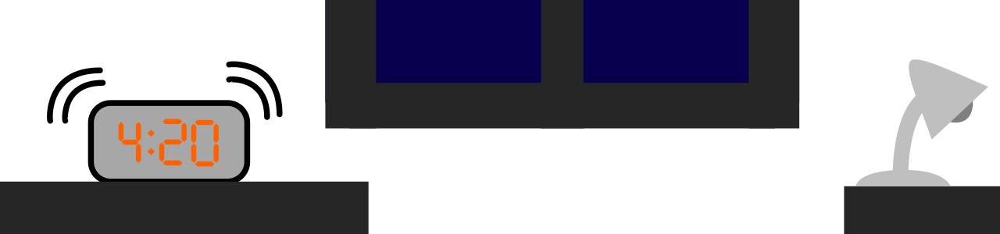

A blaring sound pierced the comfortable silence as Jag Guerrette's alarm clock dragged him back from the dead. The poor alarm had taken a beating over the last three years of high school, Guerrette thought. He didn't feel bad for it long though, as his brain comprehended the numbers on the screen. It was 4:20 in the morning. He had slept for a total of three hours and fifteen minutes. The comfort of his bed fought his will to get up and face the day. "Not today. Today is not the day I let it win." He slowly dragged himself out of bed and prepared himself for morning swim practice.
Stories like this aren't all that uncommon among American teens. According to the National Sleep Foundation only 15% of teenagers get enough sleep on school nights. With teenagers "enough sleep" is anywhere between 8-10 hours. We will explore this sleep problem on two fronts: Why don't teens get enough sleep, and what are the effects of this? Eugene Kim is a medical student attending USF Health Morsani College of Medicine, and is very passionate about sleep. He says that there are three sides to the sleep battle: getting to sleep, staying asleep/ensuring good sleep quality, and waking up. Why do teens go to sleep so late? For some, it's just because the desire to stay up late is natural. According to Peg Reeves, a former school nurse at Oyster River High School, teens' sleep patterns naturally get pushed later. Reeves explained how teenagers naturally start getting tired around 11pm. For some though, the amount of sleep they get isn't up to their natural rhythms. Many teens are bogged down with sports, school, and other extracurriculars. Guerrette is one of these students.
Kristy Short stares blankly at the board. It was a grey morning with occasional showers. Whenever it rained the physics room got cooler than usual. She shivered. Mr Thiabault, the AP Physics teacher, was writing circular motion equations on the board, at least she thought he was. She found it hard to concentrate. Looking down at her open notebook she saw the last test she took, 94. She was proud of herself, but cringed thinking of the hours she had spent the night before the test. It hadn't been easy to get up that morning. Looking back up she noticed Guerrette had his head down on the desk. Wanting to do the same, she did her best to focus back on the board. While she scurried to catch up on notes she thought about how she would make it through the rest of the day. It was only second period and homework was stacking up. She didn't know why she was so tired, reminiscing on the warm feeling her phone gaver her when it said her alarm would go off in seven and a half hours, an unusually long night.
One of the reasons Short was feeling so tired could have to do with exposure to blue light. Exposure to blue light results in bad sleep quality. Kim explains further, saying, "blue lights come in the form of TV, phone or tablet use, and computer screen time. From a historical perspective, blue light at night has only become possible with the advent of electricity-- prior to 200 years ago, the only light we would see after sunset was campfire and candlelight (which are heavily red-spectrum sources of light), or the moon and stars (which have some blue-spectrums, but are so much dimmer than screen light)." This means that if a person checks their phone or writes an essay on a computer, they will be prevented from getting decent sleep for the next few hours. Teenagers constantly use devices during all times of the day, and it's likely many charge their phones within reach from their bed. So when teens finally get to sleep, their brains don't want to shut down, making sleep less effective. Some students don't make it through the school day, and go down to the nurse to sleep during classes. Danuta Richards, the current school nurse at Oyster River High School, recalls how often she would run out of beds in the nurse's office. She explained how some days during the week she would have to pull chairs together in the hall, lay a blanket down, and shut the lights out just to have a place to put the students that were too tired to go to class. Waking up is the last part of a night of sleep, and obviously affects the amount of sleep you get. According to Kim, "[teenagers] naturally want to wake up later: approximately 8 or 9am, well after sunrise." Unfortunately for most teens, this isn't possible, as school starts well before nine in the morning. In the case of Guerrette and Short, school starts at 7:35 am, requiring them to be up before seven. So what if schools just started later? Pushing back start times would let students better follow their natural rhythms by letting them sleep in later. They could stay up later and still get a good night's rest. Sounds like a plausible solution, right? Rob Quaglieri is a health teacher at Oyster River High School. He brings up a couple of problems with later start times. "If we delay start times, coaches may see an opportunity to move practices to the morning." He also said that "if we were to go later in the day, students can't work as long after school. Some students have families that rely on them working after school, and delayed start times would hurt their ability to do this." Quaglieri brought up another issue: leaving school for extracurricular activities. "If students have to leave school an hour early for every away game for say soccer, how are they going to make up for the classes that they miss?" Later start times aren't a bad idea, even with their downfalls. Mark Milliken is the Dean of Faculty at Oyster River High School, and thinks the philosophy behind later start times makes sense. He said "Having had kids, I can say that when they were younger, they woke up early naturally. When they were adolescent, they got up late naturally." Being an administrator, Milliken did mentioned that he doesn't know how the new schedule would work with athletics. Even with it's downfalls, the idea of later start times is gaining popularity, and Millikan doesn't know what will happen in the future. He said, "Whatever happens, nothing big will change any time soon."
Guerrette walked out to his car in the school parking lot after swimming drylands. Sweaty from working out, the cool air and light drizzle felt good. Driving home, he started making a list of the homework he had to do. It wasn't as bad as it could be. American studies and precalculus wouldn't take too long, but he knew most of the work was going to be studying. He disliked studying. There was no clear end, no final problem like math homework. He knew studying for AP Physics would take the longest. None of the new notes or examples made sense. Getting home Guerrette quickly did his chores and started his homework around 5:30 pm.
Why is sleep important? Kim jokingly said, "It might be easier to describe the few ways that sleep does not affect the brain!" He continues saying that sleep affects the "integration of short-term memory to long-term stores, emotional development and resilience, cerebrospinal fluid rinsing and scrubbing of the central nervous system, the importance of sleep cannot be overstated." A lot of change happens to the body during the teen years, so it is especially vital that teenagers get enough sleep to keep themselves healthy. If lack of sleep negatively impacts a teenagers ability to form memories, short and long term, it hinders the ability to learn. Isn't it kind of ironic that some students stay up all night for the purpose of education, and in doing so they hurt their ability to learn? Not getting enough sleep on school nights can be compared to compounding debt, because the more sleep you miss, the more you'll miss in the future.
Guerrette stood up. He had been staring at the same example problem for the past ten minutes, and hadn't been able to make any sense of it. Overall he didn't feel any more prepared for the physics test tomorrow. Looking up at his phone, he saw it was creeping up on 1am. He didn't know how it got so late, but this was usual for this late in the week. The more near-sleepless nights that passed, the longer the next night's homework took. It compounded on itself. Doing the math, Guerrette realized he had been studying for physics the past three hours. He didn't feel ready for the test tomorrow, but didn't really care at this point, he needed to get sleep, and studying wasn't doing him any good in his current state any way. Switching his alarm on for 4:20am, he tried to figure out how he was going to do the same thing all over again the next day.